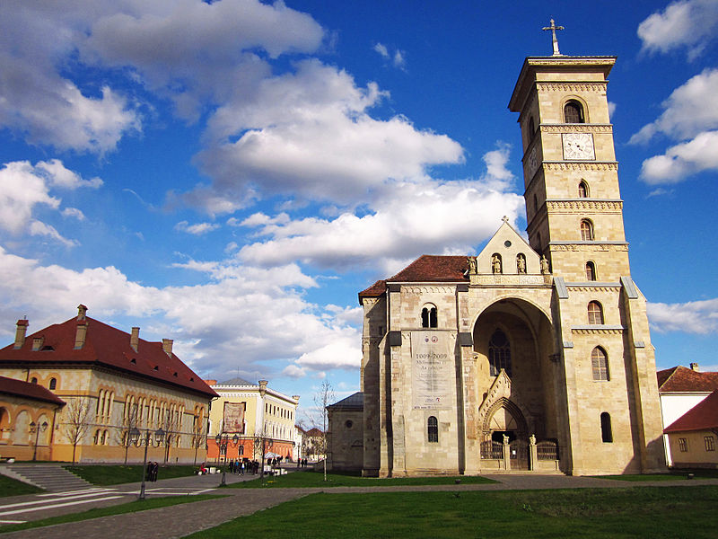
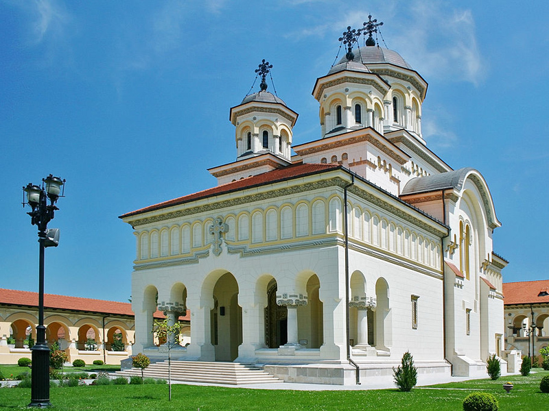

Cetatea Alba Carolina este o fortăreață cu bastioane de tip Vauban[1] construită la începutul secolului al XVIII-lea în orașul medieval Alba Iulia pe Dealul Citadelei

Catedrala Romano-Catolică Sfântul Mihail
Catedrala Romano-Catolică Sfântul Mihail, situată în interiorul cetății Alba Iulia, este cel mai valoros monument de arhitectură romanică din Transilvania.

Catedrala Încoronării din Alba Iulia
Catedrala Încoronării din Alba Iulia, cu hramul Sfânta Treime,a fost construită cu sprijinul Casei Regale a României, după planurile arhitectului Victor Ștefănescu.
E nevoie doar de câteva ore petrecute la Alba Iulia pentru a-ți arăta ţie şi a le demonstra şi tuturor celor care te însoţesc, că întoarcerea în timp este posibilă. Nu un timp psihologic, unul imaginar, nici chiar timpul fizic, clasic, ştiut, despre care vorbeau savanţii, ci un timp al regăsirii de sine într-un loc în care istoria a avut curajul să renască şi să trăiască din nou, la prezent: Cetatea Alba Carolina. Fie că a trecut odată cu legiunile romane prin Apulum, mai apoi prin vechiul burg Bălgrad şi până la Alba Iulia zilelor noastre, călătorul, oricât de grăbit, nu a încetat să fie fascinat de Cetate. De ceea ce a văzut din afara ei, de zidurile parcă de netrecut, dar mai ales de ceea ce a descoperit odată intrat pe poarta Cetăţii: oameni extraordinari şi locuri desprinse parcă din altă lume, în care fiecare piatră respiră în ritmul celor mai bine de două mii de ani şi fiecare treaptă urcată sau coborâtă, fiecare tunel străbătut, te conving cu fiecare secundă în plus petrecută aici, că în Alba Iulia, cealaltă capitală.
Prima poarta dintre cele trei ale cetatii bastionare, care asigura accesul din directia estica are forma unui arc de trimf cu trei intrari. Pe ambele fatade ale portii se afla patru basoreliefuri cu scene mitologice. În partea superioara a acesteia se gaseste, pe un piedestal, stema Austriei incadrata de statuile zeului Marte si zeitei Venus si la cele doua extremitati doua bombarde in pozitie de tragere.
Poarta a II-a a cetatii bastionare este amplasata pe cea de-a doua linie de aparare a acesteia, având trei intrari cu deschiderile libere in partea superioara. Aceasta a fost demolata partial in anul 1937, pentru a permite desfasurarea lucrarilor de constructie la "Obeliscul Horea, Closca si Crisan". Dupa restaurare, conservare si reconstituire, Poarta a II-a a fost inclusa in circuitul cetatii.
Poarta a III-a a cetatii bastionare de la Alba Iulia este cea mai mare si mai impunatoare dintre cele sapte porti ale fortificatiei, remarcându-se prin masivitatea si bogatia decorului ce o impodobeste pe ambele fatade. Poarta are forma unui edificiu prismatic, cu dublu arc de triumf, având doua intrari pietonale si una carosabila. Deasupra acesteia se afla statuia ecvestra a lui Carol al VI-lea, imparatul austriac in timpul caruia a fost ridicata cetatea. În soclul statuii imparatului austriac, se afla amenajata celula unde se presupune ca a fost inchis Horea, principalul conducator al marii rascoale taranesti din 1784-1785.
Poarta a IV-a este situata la mijlocul zidului ce leaga bastionul Sfintei Trinitati de bastionul Sfântul Mihail, fiind singura decorata de pe latura vestica, in stil baroc. Poarta este prevazuta cu o singura intrare semicirculara incadrata de pilastri, de o parte si de cealalta a acesteia gasindu-se doua camere de garda asezate simetric in valul de pamânt al curtinei, iar deasupra portii se afla o cladire care adapostea in trecut un corp de garda.
Poarta a V-a a fost amplasata pe coltul de sud-vest al ravelinului Sfânul Mihail, demolat partial in 1921, cu ocazia lucrarilor de constructie a Catedralei Ortodoxe. Poarta este una dintre intrarile secundare, aflate in partea vestica a cetatii Alba Carolina. Arhitectura acesteia este una simpla, fara elemente sculpturale. În fata portii se gaseste un pod ce face legatura intre ravelinul Sfântul Mihail si cea de-a treia linie de aparare a cetatii numita contragarda.
Poarta a VI-a este amplasata pe cea de-a treia linie de aparare, contragarda. Aceasta are dimensiuni reduse, fiind compusa doar din doi piloni laterali lipsiti de elemente decorative. La exterior, cu ajutorul unui pod de lemn comunica cu o piateta, iar in partea opusa printr-un pasaj ingust, facea legatura cu poarta a V-a. Mai este cunoscuta si sub denumirea de Poarta Regelui deoarece pe aici au intrat regele Ferdinand si regina Maria, in anul 1922, cu ocazia incoronarii lor.